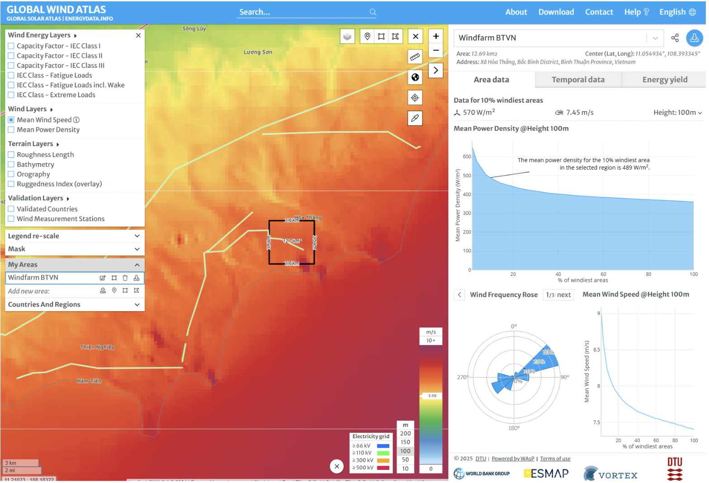
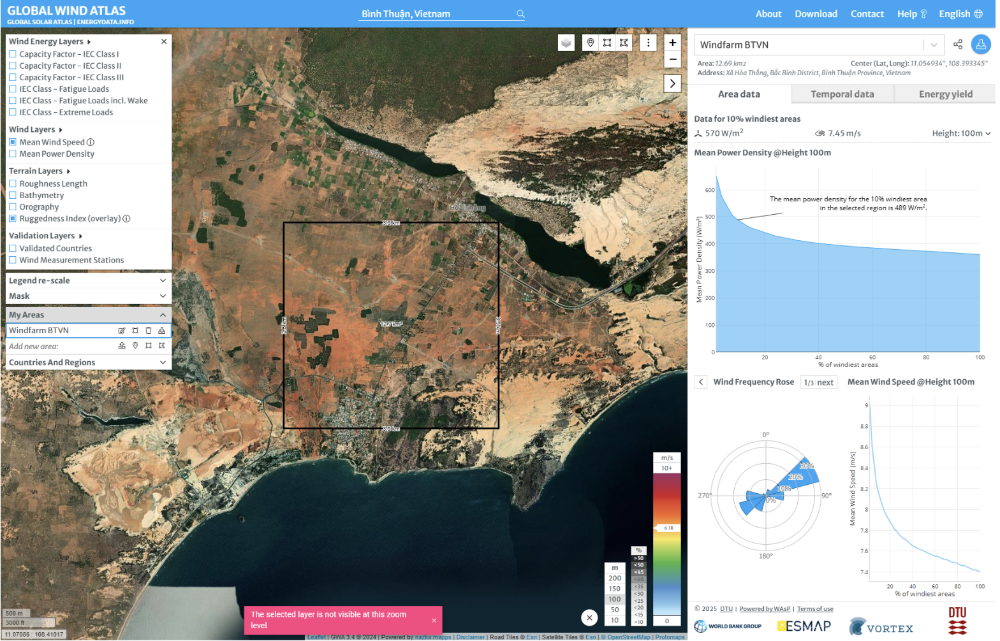
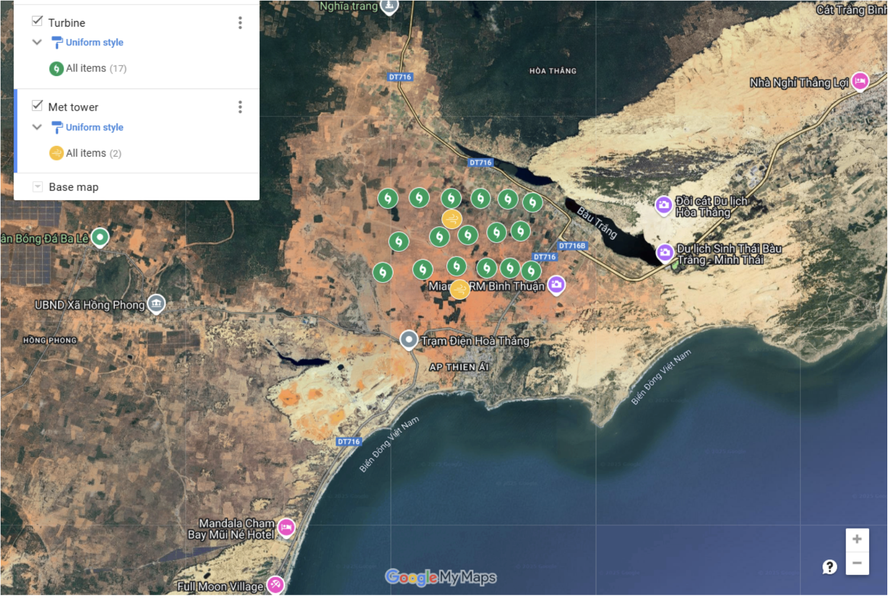
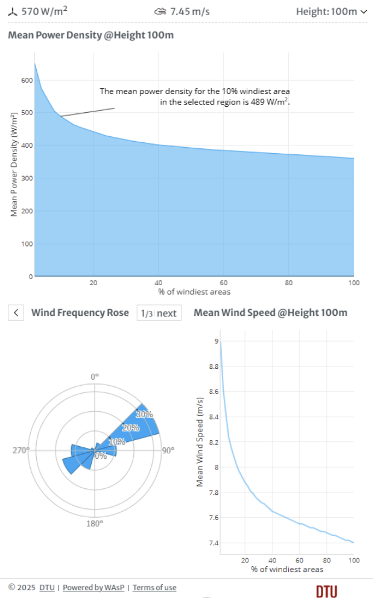
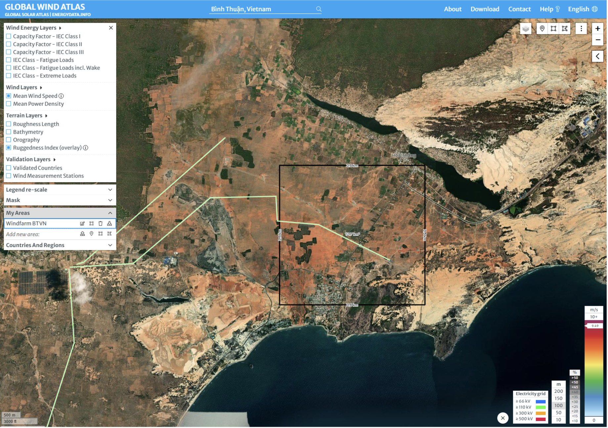
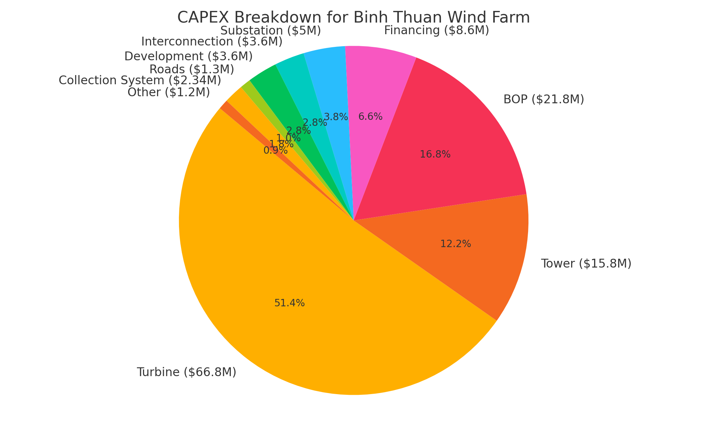

71.4 MW Wind Farm Conceptual Design in Binh Thuan, Vietnam
This project delivers a robust conceptual design of a 71.4 MW onshore wind farm using 17 Vestas V150 turbines in Binh Thuan, Vietnam. With high wind speeds (~7.45 m/s) and minimal terrain complexity, the location ensures strong energy yield, cost-effectiveness, and sustainable integration into Vietnam’s 2030 renewable energy roadmap.
Introduction & Motivation
Vietnam aims to meet 30% of its energy demand through renewables by 2030. Binh Thuan Province, with flat terrain and favorable wind conditions, is a high-potential region for utility-scale wind deployment.

Site Selection & Comparative Analysis
We evaluated sites in Connecticut, Texas, and Vietnam. Binh Thuan exhibited the highest wind power density and regulatory ease, making it the most cost-effective and low-risk location.

Turbine Configuration & Wind Profile
The farm uses 17 V150-4.2 MW turbines in a 6-6-5 alignment. The spacing considers wind rose patterns to minimize wake loss while optimizing land use.


Infrastructure & Monitoring
Located near an existing 110 kV grid line and roads, the site ensures low transmission cost. Two met towers will record wind data for yield validation and layout refinement.

Economic Viability
- Total CAPEX: $127.7M → ~$1,788/kW (global benchmark compliant)
- NCF: 41.6% → Annual Energy Production ~260,550 MWh
- LCOE: $65–70/MWh → competitive in Southeast Asia
- Cost Breakdown: 52% turbines, 17% balance of plant, 12% towers

Risk Management Strategy
- ✔️ Wind resource variability → Met mast & CFD modeling
- ✔️ Construction risks → Pre-drilling & experienced EPC contracts
- ✔️ Permitting delays → IFC-compliant stakeholder plans
- ✔️ Wake losses → Optimized turbine spacing & yaw control
- ✔️ Price volatility → LCOE sensitivity analysis & fixed-rate contracts
Summary & Outlook
- 17 turbines producing 71.4 MW capacity
- ~260,550 MWh/year with 41.6% NCF
- LCOE of $65–70/MWh → financially viable
- Minimal transmission cost → proximity to 110 kV grid